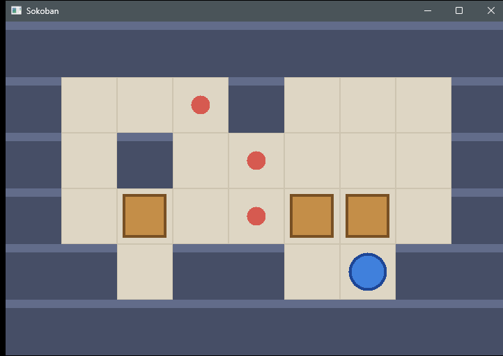
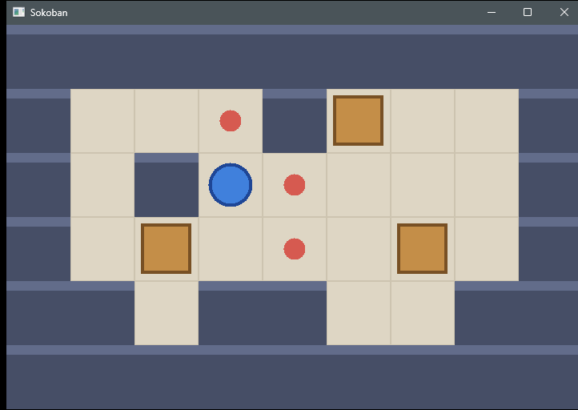
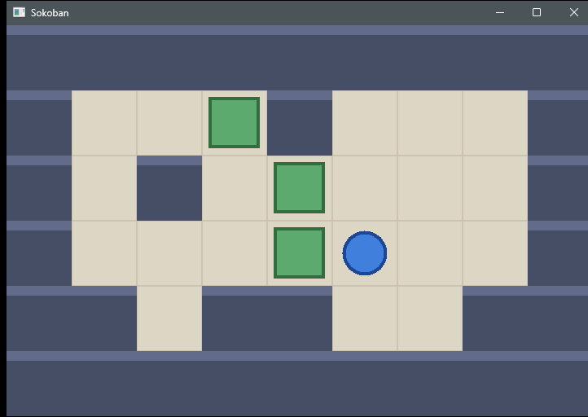
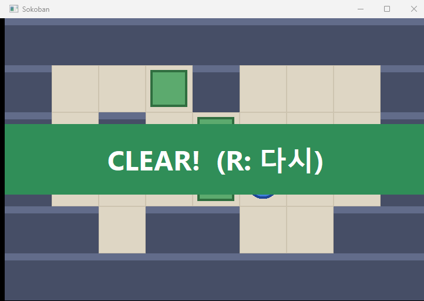

Win32로 소코반 만들기 · 6편
6편 · 클리어 판정과 재시작
Win32 API로 소코반을 만드는 시리즈 6편입니다. 맵을 다시 읽는 것만으로 재시작을 구현하고, 상태를 따로 세지 않고 맵을 훑는 방식으로 클리어를 판정합니다. GDI로 글자를 그리는 방법도 함께 다룹니다.
실행 결과

영상 속 실행 장면
영상에서 직접 실행해 본 장면들입니다.
망친 판

R 을 누르면

다 올렸는데 반응이 없다

클리어!

전체 코드
5편 코드에서 31줄 추가, 0줄 변경되었습니다. 표시된 줄이 이번 편에서 바뀐 부분입니다.
main.cpp · 263줄 추가변경받기
1#include <windows.h>23const int TILE = 80;4const int MAP_W = 9;5const int MAP_H = 6;67const char* LEVEL[MAP_H] = {8 "#########",9 "# .# #",10 "# # . #",11 "# $ .$$ #",12 "## ##@ ##",13 "#########",14};1516const COLORREF FLOOR_COLOR = RGB(222, 214, 196);17const COLORREF FLOOR_LINE_COLOR = RGB(205, 196, 176);18const COLORREF WALL_COLOR = RGB(70, 78, 102);19const COLORREF WALL_TOP_COLOR = RGB(98, 108, 138);20const COLORREF GOAL_COLOR = RGB(214, 90, 80);21const COLORREF BOX_COLOR = RGB(196, 142, 72);22const COLORREF BOX_EDGE_COLOR = RGB(120, 80, 36);23const COLORREF BOX_OK_COLOR = RGB(92, 170, 110);24const COLORREF BOX_OK_EDGE_COLOR = RGB(48, 110, 64);25const COLORREF CLEAR_TEXT_COLOR = RGB(255, 255, 255);26const COLORREF CLEAR_BACK_COLOR = RGB(48, 142, 88);27const COLORREF PLAYER_COLOR = RGB(64, 128, 220);28const COLORREF PLAYER_EDGE_COLOR = RGB(30, 70, 150);2930char g_tile[MAP_H][MAP_W]; // '#' 벽, ' ' 바닥, '.' 목표31bool g_box[MAP_H][MAP_W];32int g_playerX = 0;33int g_playerY = 0;3435void LoadLevel()36{37 for (int y = 0; y < MAP_H; y++)38 {39 for (int x = 0; x < MAP_W; x++)40 {41 char c = LEVEL[y][x];42 g_tile[y][x] = (c == '#' || c == '.') ? c : ' ';43 g_box[y][x] = (c == '$');44 if (c == '@')45 {46 g_playerX = x;47 g_playerY = y;48 }49 }50 }51}5253void FillColor(HDC hdc, RECT r, COLORREF color)54{55 HBRUSH brush = CreateSolidBrush(color);56 FillRect(hdc, &r, brush);57 DeleteObject(brush);58}5960void FrameColor(HDC hdc, RECT r, COLORREF color)61{62 HBRUSH brush = CreateSolidBrush(color);63 FrameRect(hdc, &r, brush);64 DeleteObject(brush);65}6667void DrawShape(HDC hdc, RECT r, COLORREF fill, COLORREF edge, bool circle)68{69 HBRUSH brush = CreateSolidBrush(fill);70 HPEN pen = CreatePen(PS_SOLID, 4, edge);71 HGDIOBJ oldBrush = SelectObject(hdc, brush);72 HGDIOBJ oldPen = SelectObject(hdc, pen);7374 if (circle)75 Ellipse(hdc, r.left, r.top, r.right, r.bottom);76 else77 Rectangle(hdc, r.left, r.top, r.right, r.bottom);7879 SelectObject(hdc, oldBrush);80 SelectObject(hdc, oldPen);81 DeleteObject(brush);82 DeleteObject(pen);83}8485RECT TileRect(int x, int y)86{87 return { x * TILE, y * TILE, (x + 1) * TILE, (y + 1) * TILE };88}8990void DrawTile(HDC hdc, int x, int y)91{92 RECT r = TileRect(x, y);93 if (g_tile[y][x] == '#')94 {95 RECT top = { r.left, r.top, r.right, r.top + 12 };96 FillColor(hdc, r, WALL_COLOR);97 FillColor(hdc, top, WALL_TOP_COLOR);98 return;99 }100101 FillColor(hdc, r, FLOOR_COLOR);102 FrameColor(hdc, r, FLOOR_LINE_COLOR);103 if (g_tile[y][x] == '.')104 {105 RECT dot = r;106 InflateRect(&dot, -28, -28);107 DrawShape(hdc, dot, GOAL_COLOR, GOAL_COLOR, true);108 }109}110111void DrawBox(HDC hdc, int x, int y)112{113 RECT box = TileRect(x, y);114 InflateRect(&box, -10, -10);115 if (g_tile[y][x] == '.')116 DrawShape(hdc, box, BOX_OK_COLOR, BOX_OK_EDGE_COLOR, false);117 else118 DrawShape(hdc, box, BOX_COLOR, BOX_EDGE_COLOR, false);119}120121void DrawClear(HDC hdc)122{123 int mid = MAP_H * TILE / 2;124 RECT banner = { 0, mid - 60, MAP_W * TILE, mid + 60 };125 FillColor(hdc, banner, CLEAR_BACK_COLOR);126127 HFONT font = CreateFontW(64, 0, 0, 0, FW_BOLD, FALSE, FALSE, FALSE,128 DEFAULT_CHARSET, 0, 0, 0, 0, L"Segoe UI");129 HGDIOBJ oldFont = SelectObject(hdc, font);130 SetTextColor(hdc, CLEAR_TEXT_COLOR);131 SetBkMode(hdc, TRANSPARENT);132 DrawTextW(hdc, L"CLEAR! (R: 다시)", -1, &banner,133 DT_CENTER | DT_VCENTER | DT_SINGLELINE);134 SelectObject(hdc, oldFont);135 DeleteObject(font);136}137138void DrawMap(HDC hdc)139{140 for (int y = 0; y < MAP_H; y++)141 {142 for (int x = 0; x < MAP_W; x++)143 {144 DrawTile(hdc, x, y);145 if (g_box[y][x])146 DrawBox(hdc, x, y);147 }148 }149}150151void DrawPlayer(HDC hdc)152{153 RECT player = TileRect(g_playerX, g_playerY);154 InflateRect(&player, -14, -14);155 DrawShape(hdc, player, PLAYER_COLOR, PLAYER_EDGE_COLOR, true);156}157158bool IsWall(int x, int y)159{160 return g_tile[y][x] == '#';161}162163bool IsCleared()164{165 for (int y = 0; y < MAP_H; y++)166 for (int x = 0; x < MAP_W; x++)167 if (g_box[y][x] && g_tile[y][x] != '.')168 return false;169 return true;170}171172void TryMove(int dx, int dy)173{174 int nx = g_playerX + dx;175 int ny = g_playerY + dy;176 if (IsWall(nx, ny))177 return;178179 if (g_box[ny][nx])180 {181 int bx = nx + dx;182 int by = ny + dy;183 if (IsWall(bx, by) || g_box[by][bx])184 return;185186 g_box[ny][nx] = false;187 g_box[by][bx] = true;188 }189190 g_playerX = nx;191 g_playerY = ny;192}193194LRESULT CALLBACK WndProc(HWND hWnd, UINT msg, WPARAM wParam, LPARAM lParam)195{196 switch (msg)197 {198 case WM_KEYDOWN:199 switch (wParam)200 {201 case VK_LEFT: TryMove(-1, 0); break;202 case VK_RIGHT: TryMove(1, 0); break;203 case VK_UP: TryMove(0, -1); break;204 case VK_DOWN: TryMove(0, 1); break;205 case 'R': LoadLevel(); break;206 case VK_ESCAPE: DestroyWindow(hWnd); return 0;207 }208 InvalidateRect(hWnd, nullptr, TRUE);209 return 0;210211 case WM_PAINT:212 {213 PAINTSTRUCT ps;214 HDC hdc = BeginPaint(hWnd, &ps);215 DrawMap(hdc);216 DrawPlayer(hdc);217 if (IsCleared())218 DrawClear(hdc);219 EndPaint(hWnd, &ps);220 return 0;221 }222223 case WM_DESTROY:224 PostQuitMessage(0);225 return 0;226 }227 return DefWindowProcW(hWnd, msg, wParam, lParam);228}229230int WINAPI wWinMain(HINSTANCE hInstance, HINSTANCE hPrevInstance,231 PWSTR pCmdLine, int nCmdShow)232{233 LoadLevel();234235 WNDCLASSEXW wc = {};236 wc.cbSize = sizeof(wc);237 wc.lpfnWndProc = WndProc;238 wc.hInstance = hInstance;239 wc.hCursor = LoadCursorW(nullptr, IDC_ARROW);240 wc.hbrBackground = (HBRUSH)(COLOR_WINDOW + 1);241 wc.lpszClassName = L"SokobanWindow";242 RegisterClassExW(&wc);243244 RECT rc = { 0, 0, MAP_W * TILE, MAP_H * TILE };245 AdjustWindowRect(&rc, WS_OVERLAPPEDWINDOW, FALSE);246 int width = rc.right - rc.left;247 int height = rc.bottom - rc.top;248249 HWND hWnd = CreateWindowExW(0, L"SokobanWindow", L"Sokoban",250 WS_OVERLAPPEDWINDOW,251 CW_USEDEFAULT, CW_USEDEFAULT, width, height,252 nullptr, nullptr, hInstance, nullptr);253 ShowWindow(hWnd, nCmdShow);254 UpdateWindow(hWnd);255256 MSG msg;257 while (GetMessageW(&msg, nullptr, 0, 0) > 0)258 {259 TranslateMessage(&msg);260 DispatchMessageW(&msg);261 }262 return (int)msg.wParam;263}
빌드 방법
Visual Studio
- 새 프로젝트 → Windows 데스크톱 애플리케이션 또는 빈 프로젝트
- 생성된 소스를 지우고 이 페이지의
main.cpp를 추가 - 빈 프로젝트라면 속성 → 링커 → 시스템 → 하위 시스템을 창(/SUBSYSTEM:WINDOWS) 으로
- Ctrl+F5 로 실행
명령줄 (x64 Native Tools Command Prompt)
cl /EHsc /std:c++20 /utf-8 /DUNICODE /D_UNICODE main.cpp /link /SUBSYSTEM:WINDOWS user32.lib gdi32.lib
코드는 흐름을 보여 주려고 에러 처리를 생략했습니다. 실제 프로그램에서는 RegisterClassExW·CreateWindowExW 의 반환값을 확인하세요.